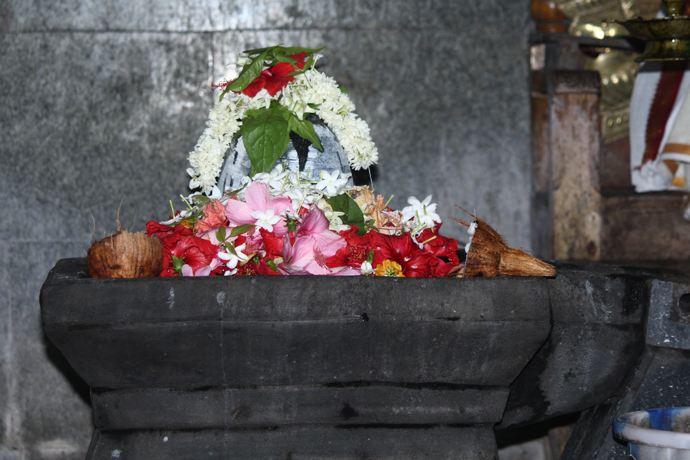
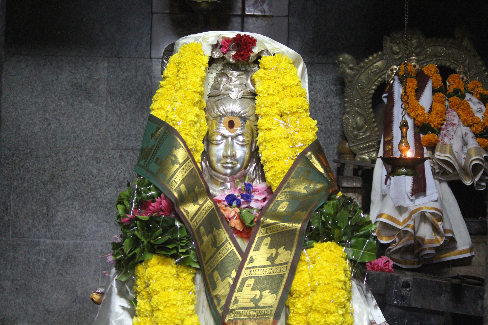
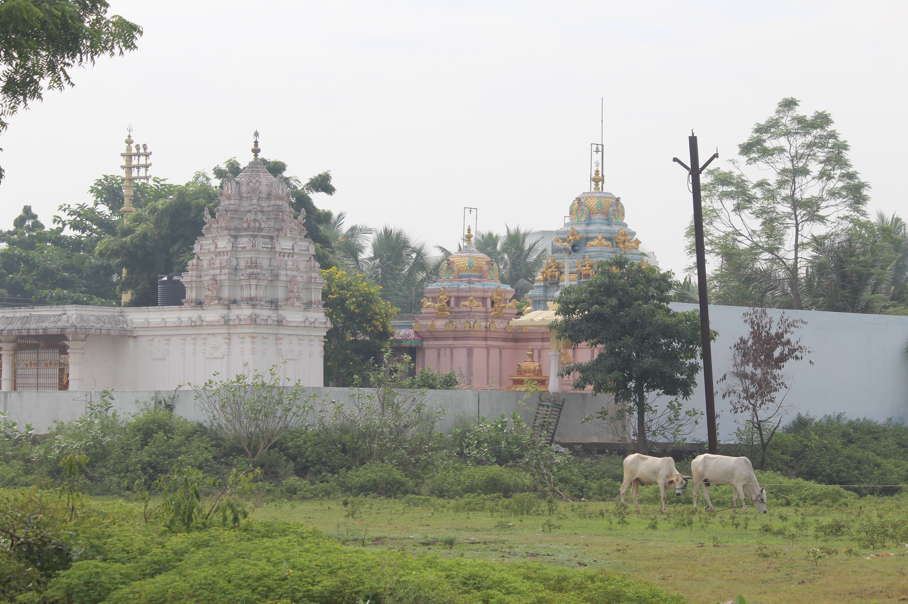
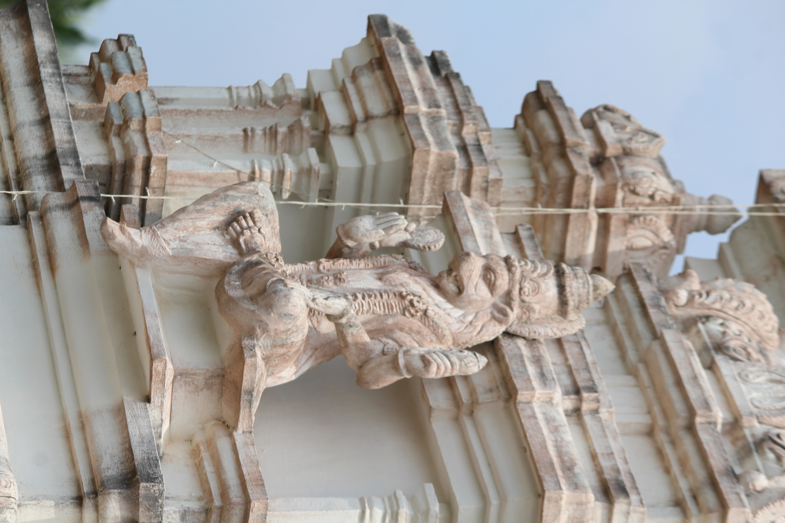
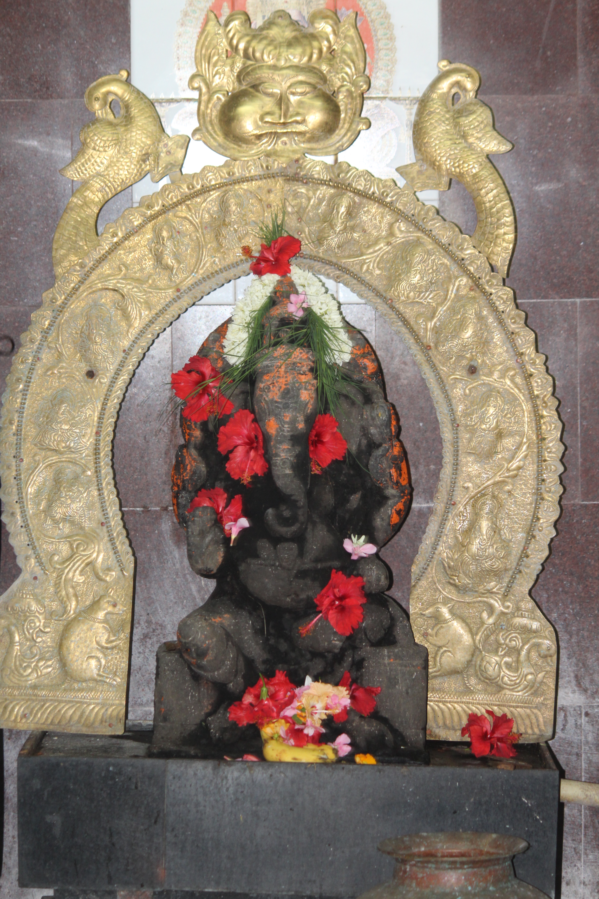
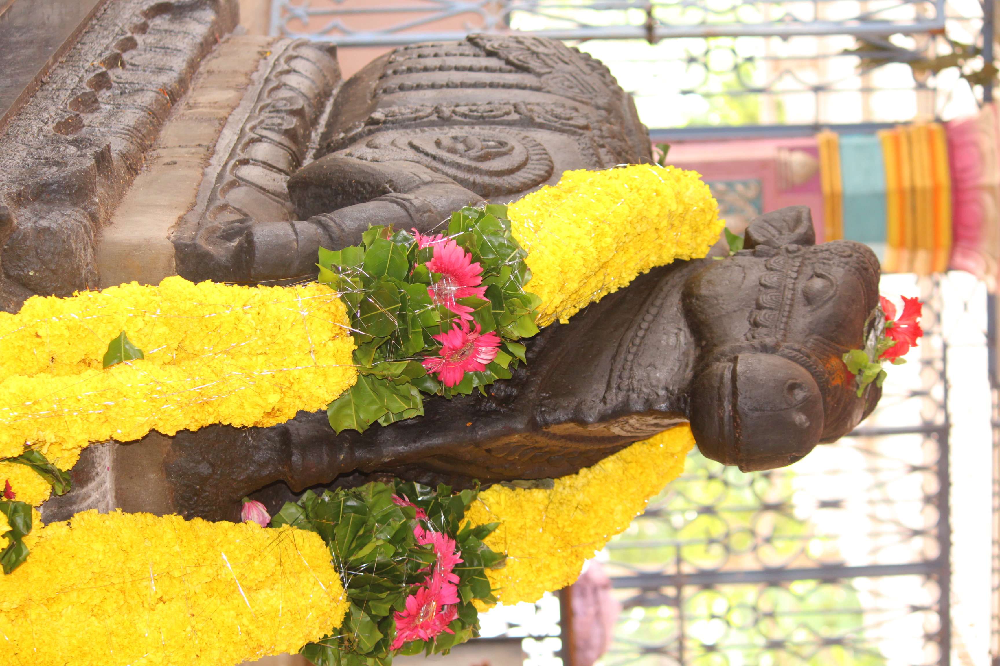
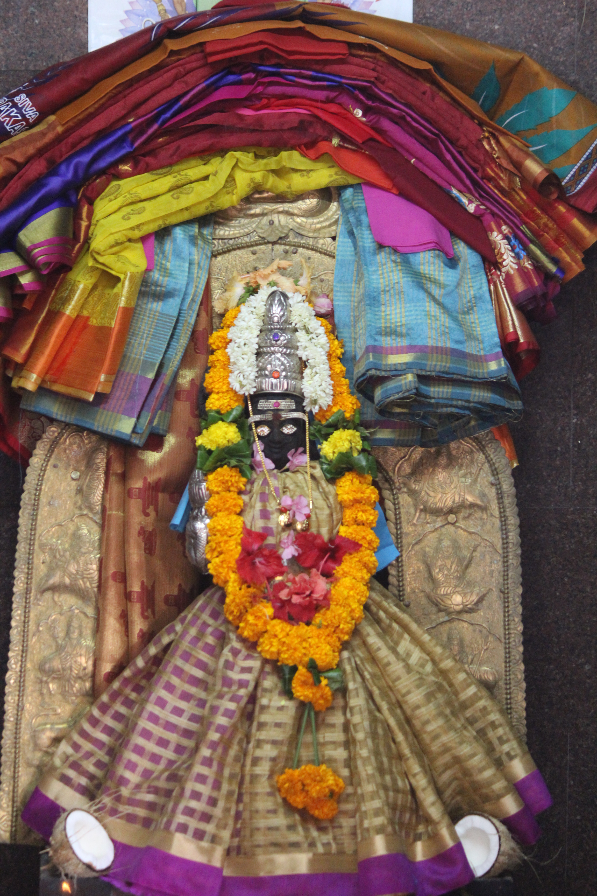

పూజలు
నిత్య పూజలు
- నిత్యారచన
(గోత్ర నామాలతో)
- నిత్యాభిషేకం
ప్రత్యేక పూజలు
- మాస శివ రాత్రి :
-
1. ప్రత్యేక అభిషేకాలు
- మహా శివ రాత్రి :
- 1. శివ రాత్రి ముందు రోజు కళ్యాణం
-
2. శివ రాత్రి ఉదయం 3:00 నుండి 11:00 వరకు అభిషేకాలు
- 3. సాయంత్రం 6:30 నుండి లింగోద్భవ అభిషేకాలు
- 4. రాత్రి జాగారం
కార్తీక మాస పూజలు
- 1. నిత్యాభిషేకం
- 2. రుద్ర హోమం
- 3. లక్ష భిల్వార్చన
- 4. జ్యోతిర్లింగార్చన
- 5. సూర్య నమస్కారాలు
- 6. సుందరాఖాండ పారాయణం
- కార్తీక పౌర్ణమి :
- 1. జ్వాలా తోరణం
పండగలు
- వినాయక చవితి:
-
1. నవ రాత్రులు 9 రోజులు శ్రీ మహా గణపతికి ఉదయం , సాయంత్రం విశేష పూజలు
- దసర :
- 1. దేవి నవ రాత్రులు 9 రోజులు అమ్మవారికి ఉదయం , సాయంత్రం కుంకుమార్చనలు
- శని త్రయోదశి :
-
1. నవ గ్రహాలకు విశేష పూజలు
ఆలయ చిత్రాలు






